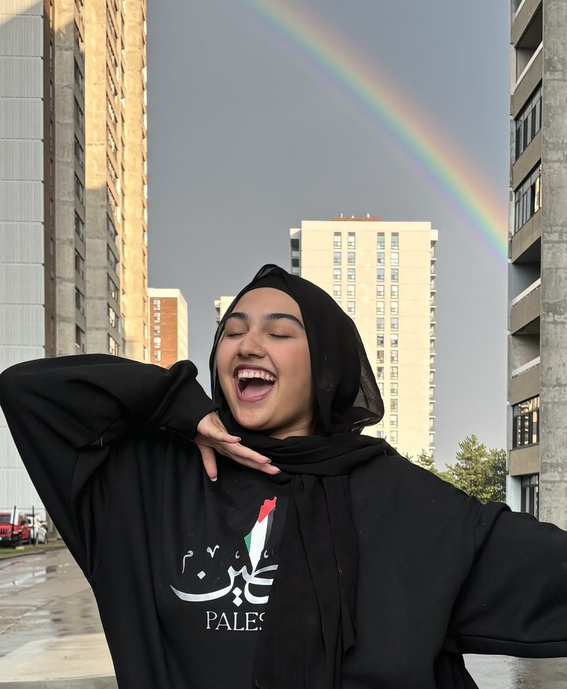

About Me
Hello! I'm Nadia Khan. I'm a fifth year undergrad student working towards my Bachelor of Commerce specializing in Business Technology. I have four incredible internships in my belt ranging from consulting roles to UX/UI work. I am always looking for new ways to optimize work flow, organization, and make work easy and fun for everyone. I'm an avid reader, amateur chef, and I adore cute furry animals. I bring a can-do attitude with me everywhere I go and never stop being ready to learn. Welcome to my portfolio site!
Career Experiences
Information Officer | Ontario Public Service: Ministry of Education | 2024
- Assisted with the migration of content from PDF to digital format
- Provided support for the editing, posting, and organization of curriculum content and resources to the ministry's website
- Mapped content and created structure for content entry using content management system
- Used software to add video resources to the ministry's website
- Ensured that produced content is AODA-compliant
- Contributed input to continuous improvement of existing business processes to improve efficiencies
- Engaged in collaborative design and problem-solving tasks for new resource pages
Office + Culture Operations Coordinator | Relay Financial | 2022
- Determined needs to support a hybrid work approach, implementing solutions for both virtual and in-office work
- Assisted in the audio and visual setup of bi-weekly town hall meetings
- Led the planning, budgeting, and execution of culture-boosting company events
- Managed daily facility operations that contribute to workplace culture
- Helped coordinate office space usage and meeting room setups
- Partnered with vendors to enhance virtual and in-office experiences
E-Commerce Advisor | The Ontario Chamber of Commerce | 2022
- Planned, executed, and facilitated outreach with chamber networks, businesses, and institutions
- Responded to inquiries about digital adoption and the Canada Digital Adoption Program
- Supported businesses with application completion
- Tracked outcomes, maintained charts, and created reports
- Used digital toolkits to support businesses' digital adoption
- Guided businesses through digital adoption options
Education
Bachelor of Commerce | 2020-2025 | Toronto Metropolitan University
School: Ted Rogers School of Management
Major: Business Technology Management
Ontario Secondary School Diploma | 2016-2020 | Holy Name of Mary C.S.S
Specialist High Skills Major: Business Women Leaders
Awards: Honors, Ontario Scholars List, Business Certificate
Hobbies
to be filled with info about my hobbies.
Projects
to be filled with info about my projects.
{kind=link}